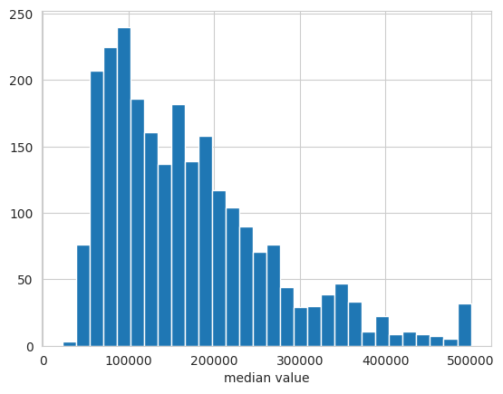
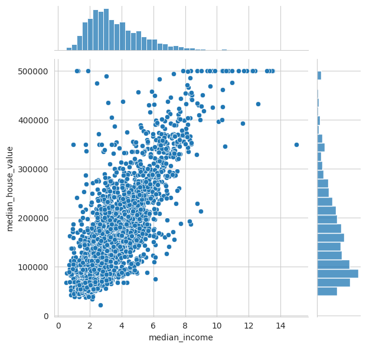
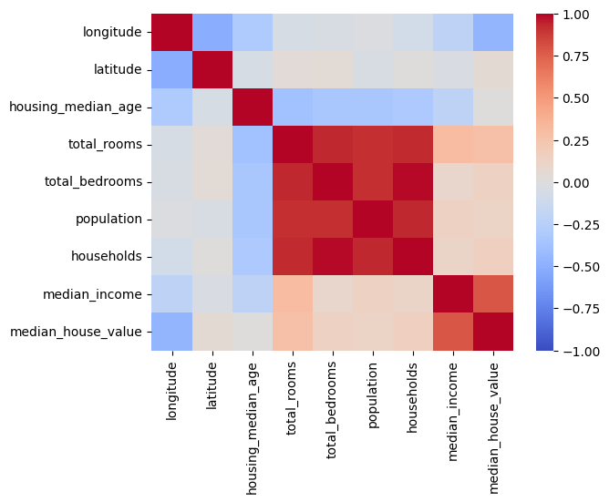
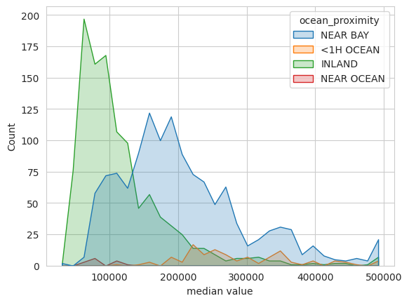

5 Data Analysis
Data analysis is conducted iteratively once you get hold of your data, when you cleaned it, when you processed it and when you analyse the outputs of your model.
6 Exploratory data analysis (EDA)
6.1 Initial analysis
After getting hold of the data, these are important properties to extract:
import pandas as pd
pd.options.display.float_format = '{:,.2f}'.format
print("First 5 samples:")
print(df.head())
print(":.. and last 5 samples:")
print(df.tail())
print("First sample per month:")
print(df.groupby("Month").first())
# The number of non-null values and the respective data type per column:
df.info()
# The count, uniques, mean, standard deviation, min, max, quartiles per column:
df.describe(include='all')
print("rows: "+ str(df.shape[0]))
print("columns: "+ str(df.shape[1]))
print("empty rows: "+ str(df.isnull().sum()))
# Rarely used:
df["col1"].unique() # returns unique values in a columnSpecific summary statistic
: ```R
sapply(mtcars, mean, na.rm=TRUE) # statistics: mean, sd, var, min, max, median, range, and quantile- Summary (Min, Max, Quartiles, Mean):
-
summary(mtcars)
Go through this check-list after data import.
6.2 After preprocessing
Univariate Analysis
Analyse only one attribute.
Categorical / discrete data: Bar chart
Plot the number of occurrences of each category / number. This helps you find the distribution of your data.
import seaborn as sns
import matplotlib.pyplot as plt
sns.countplot(df["sex"])
plt.ylabel("number of participants")
Continuous data
A histogram groups data into ranges and plot number of occurrences in each range. This helps you find the distribution of your data.
import seaborn as sns
import matplotlib.pyplot as plt
sns.set_style('whitegrid')
sns.histplot(data=df_USAhousing, x='median_house_value', bins=30)
plt.xlabel('median value')
More info: seaborn.pydata.org
A empirical cumulative distribution function shows the proportion of samples with values below a certain value.
import matplotlib.pyplot as plt
import seaborn as sns
sns.set_style('whitegrid')
sns.ecdfplot(data=train_df["feature"].sample(10000))
plt.xlabel('Sales per Customer')More info: seaborn.pydata.org
Multivariate Analysis
Continuous vs Continuous
Scatter-plots plot the values of the datapoints of one attribute on the x-axis and the other attribute on the y-axis. This helps you find the correlations, order of the relationship, outliers etc.
Use a pairplot to make a scatter plot of multiple features against each other.
import seaborn as sns
sns.pairplot(df_USAhousing[["median_income", "median_house_value", "total_rooms"]], diag_kind="hist")
Alternatively use joint plots, to visualize the marginal (univariate) distributions on the sides:
sns.jointplot(data=df_USAhousing, x="median_income", y="median_house_value")
Heatmaps plot the magnitude of values in different categories. It is commonly used in exploratory data analysis to show the correlation of the different attributes.
import seaborn as sns
sns.heatmap(df.corr(), cmap="coolwarm", vmin=-1, vmax=1, annot=True)
More info: seaborn.pydata.org
Continuous vs. Categorical data
Overlapping histograms plot the marginal distribution of the continuous distributions, using different colors for each category:
import seaborn as sns
sns.set_style('whitegrid')
sns.histplot(data=df_USAhousing, x='median_house_value', hue="ocean_proximity", element="poly", bins=30)
plt.xlabel('median value')
Use separate violin plots for each of the different categories:
import seaborn as sns
sns.catplot(data=df, x="cont_col", y="cat_col", hue="binary_col", kind="violin")Use heatmaps with two categorical feature as x- and y-axis respectively and a continuous attribute as magnitude (“heat”).
import seaborn as sns
sns.heatmap(df.pivot(index="cat_col1", columns="cat_col2", values="cont_col"), annot=True, linewidth=0.5)Categorical vs Categorical
Categorical plots plot the count / percentage of different categorical attributes in side-by-side bar charts
import seaborn as sns
sns.catplot(data=df, y="cat_col1", hue="cat_col2", kind="bar")More info: seaborn.pydata.org
7 Output Analysis
7.1 Performance
See chapters: